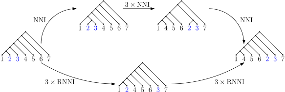

Somatic Phylogenetics
Alex Gavryushkin

6 July 2020
What this talk is NOT about

Phylogenetic inference


Image source: Wikipedia
Why is it suddenly a thing?

Molecular biology: crash course

Tumour evolution

Jahn, Katharina, Jack Kuipers, and Niko Beerenwinkel. "Tree inference for single-cell data." Genome biology 17.1 (2016): 86.
Timing tumour evolution

Lote, H., I. Spiteri, L. Ermini, A. Vatsiou, A. Roy, A. McDonald, N. Maka, et al. 2017. "Carbon Dating Cancer: Defining the Chronology of Metastatic Progression in Colorectal Cancer." Annals of Oncology 28 (6): 1243–49.

- Gavryushkin, Alex, and Alexei J. Drummond. "The space of ultrametric phylogenetic trees." Journal of Theoretical Biology 403 (2016): 197-208.
- Stadler, Tanja, Timothy G. Vaughan, Alex Gavryushkin, Stephane Guindon, Denise Kühnert, Gabriel E. Leventhal, Alexei J. Drummond.
"How well can the exponential-growth coalescent approximate constant-rate birth-death population dynamics?"
Proc. R. Soc. B. Vol. 282. No. 1806. The Royal Society, 2015.


tau-space

Geodesic in time-tree space
- Gavryushkin, Alex, and Alexei J. Drummond. "The space of ultrametric phylogenetic trees." Journal of Theoretical Biology 403 (2016): 197-208.
- Gavryushkin, Alex, and Alexei Drummond. tauGeodesic. Mar. 2015. doi: 10.5281/zenodo.47152. https://github.com/gavruskin/tauGeodesic

- Gavryushkina, Alexandra, Tracy A. Heath, Daniel T. Ksepka, Tanja Stadler, David Welch, and Alexei J. Drummond. "Bayesian total-evidence dating reveals the recent crown radiation of penguins." Systematic Biology 66.1 (2016): 57-73.
- Gavryushkin, Alex, and Alexei Drummond. tauGeodesic. Mar. 2015. doi: 10.5281/zenodo.47152. https://github.com/gavruskin/tauGeodesic

t-space: simplex

t-space: 2D

t-space: 3D

(Discrete) Timer-tree

Sampled ancestor tree

NNI graph

Why is this important?
- Tree search algorithms
- Model testing/selection and other simulation studies
Why is this hard?
Trees are many!

Discrete time-tree space
Sampled ancestor tree space

Trees at distance 2

Trees at distance 4

Main idea
(my failed proof)
History of the NNI graph
- Over 25 year of work!
- Over 7 erroneous papers published!
What's wrong with the NNI graph?
-
The Split Theorem
-
The merge and sort trick
Merge and sort trick

Merge and sort trick

RNNI is free from all these!
- Split theorem. Tick.
- Merge and sort doesn't work. Tick
-
Efficient polynomial algorithm?

What is an approximate (?) algorithm?
Graph grammars
A graph grammar consists of a finite set of productions $\{L_i \to_i R_i\}$, where $L_i$ and $R_i$ are connected undirected edge-end labeled graphs and $\to_i$ is a one-to-one map between half-edges of $L_i$ and those of $R_i$.The productions are then applied to the starting tree $T$ to derive all possible trees at $\mathrm{RNNI}$ distance up to $r$ from $T$.
A production is said to be ready at a stage $s$ of the derivation if the running tree at stage $s$ has a subgraph isomorphic to the left side $L_i$ of the production.
Graph grammar: example
Theorem (Gavryushkin, Whidden, and Matsen). The number of trees within distance $r$ from any given tree is at most
$3^{n+2r−1}$ in $\mathrm{RNNIu}$ $3^{2n+2r−1}$ in $\mathrm{RNNI}$
$4^{n+2r−1}$ in $\mathrm{DtT}$ $4^{2n+2r−1}$ in $\mathrm{DtTu}$
Corollary (Gavryushkin, Whidden, and Matsen). $$\frac{1}{2} \log_3 \frac{(n-1)!n!}{6^{n-1}} \leq \mathrm{Diam}(\mathrm{RNNIu}) \leq n^2 - 3n - \frac{5}{8}$$
Proof:
What we've done?
-
Introduced the RNNI graph on ranked trees (to the best of our knowledge)
-
Established basic geometric properties of the graph
-
Designed an efficient approximate algorithm for computing shortest paths
-
Proved that all the fancy NNI methods, e.g. Sleator-Tarjan-Thurston and merge-and-sort argument, don't work
-
Failed to prove that RNNI is NP-hard
What has to be done?
- Is RNNI polynomial? Complexity?
- Split Theorem
- Are these two related?
- ...